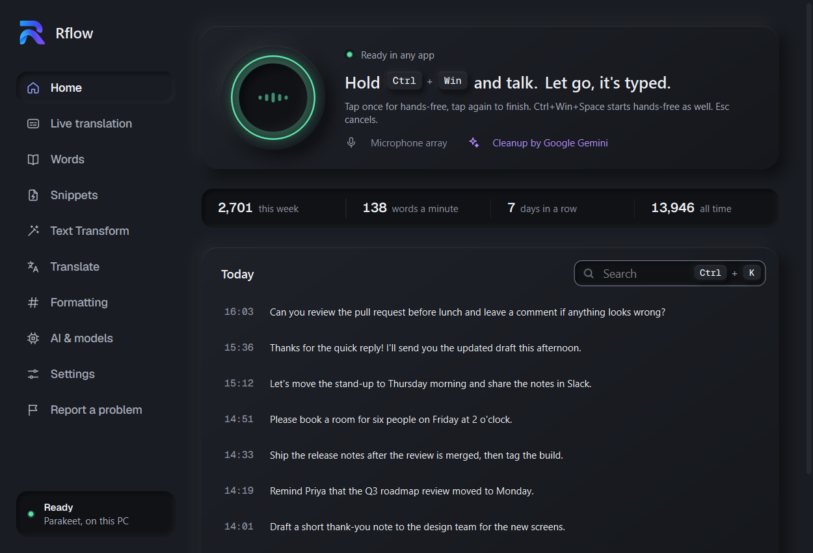
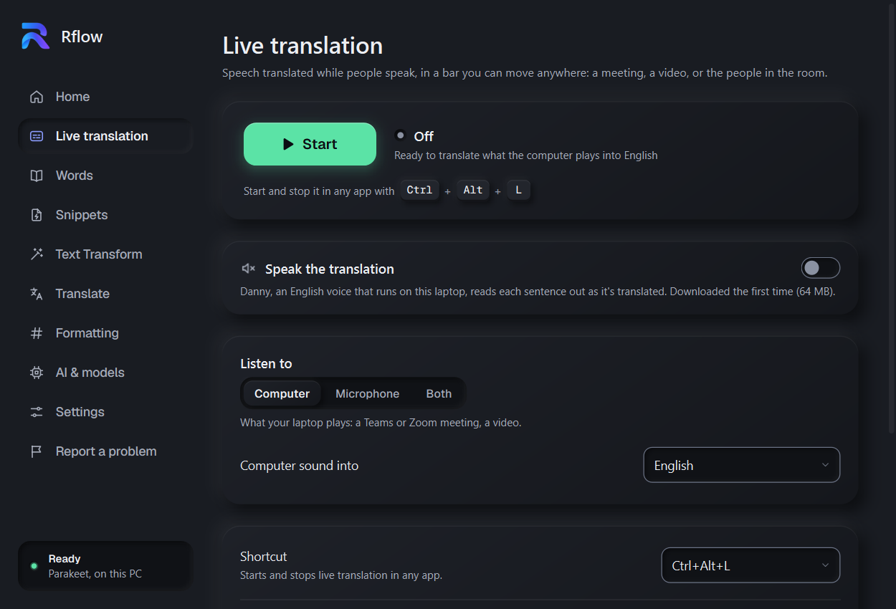
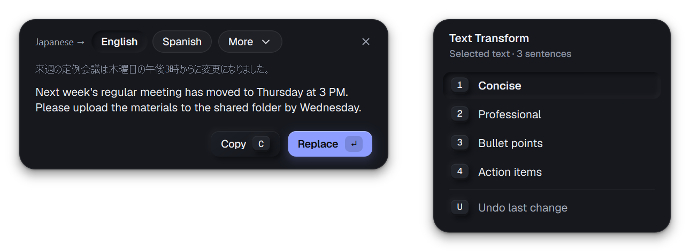

Hold Ctrl+Win in any app, say it, let go: clean text appears where your cursor is.
Windows 10 and 11, 64-bit · free and open source
Five things Rflow does, a few seconds each, in the apps you already use. Pick one, or let them play.
Hold Ctrl+Win and speakclean text is typed where your cursor is, in any app.
Say "make it concise" or "bullet points"the selected text is rewritten in place.
Say "three thirty pm" or "twenty five percent"Rflow writes 3:30 PM and 25%.
Select text and press CtrlCCthe translation pops up: copy it, or replace the text.
Press Ctrl+Alt+L in a meetingeach line is translated as people speak, and read aloud.
Rflow hears you, drops the "um"s, spells your names and terms your way, writes numbers as numbers, and types the result into the app you're in.

Chat, email, documents, code editors, the browser: the text goes where your cursor is, and your clipboard is left as it was.
Let go of the keys and the text is there. A small pill shows what it's doing, and never takes the focus.
NVIDIA Parakeet recognises speech on your own computer, no GPU needed. Or Whisper for 99 languages, a cloud model, or your own server.
Hold Ctrl+Win while you talk, or tap it for hands-free and tap again to finish. Esc cancels.
Press Ctrl+Alt+L in a Teams or Zoom call, a video, or a room full of people: what they say appears in a bar over any app, the words heard above their translation.
Each line appears as it's said and settles when the speaker pauses. Scroll back through the whole session; a transcript is saved.
A voice on your laptop speaks each sentence, and the meeting gets quieter while it speaks, then comes back.
Turn the meeting down as far as you like: Rflow keeps translating however low the sound is.
Listen to the computer, the microphone, or both. In an online meeting, your own lines are marked, without repeating what you said.
The bar stays out of shares and recordings, unless you switch it on for colleagues to read.

Over any app, on the text you select (or your last dictation). Numbers, names and your "maybe" stay as they were.

Rflow is free and open source: no account, no subscription, no tracking. Pick a setup when you install it; each one says what it costs before you choose.
Private speech on this PC, polished by a fast, cheap AI.
Speech and AI on Groq's servers: back in a fraction of a second, on any PC.
83 languages, Japanese and Hindi too, and mixed ones.
Everything on this PC: nothing leaves it, no key, no cost.
Estimates for 20 minutes of dictation a day, paid to the provider with your own key; Rflow takes nothing. The AI cleanup sends only text, never audio. Or choose each part yourself: OpenAI, Anthropic, Google Gemini, Groq, Ollama or your own server.
Open source, MIT LicenseRead the code, change it, share it. Every change is on GitHub.
Your keys stay yoursEncrypted for your Windows account, and sent only to the provider they belong to.
Updates itself, safelyOne click downloads a new version and checks it against its published checksum first.
Dictation, a rewrite and a translation, one after another, in real apps.
Not with Parakeet or Whisper: they recognise speech on your laptop. If you choose a cloud model (OpenAI, Google Gemini, Groq), each recording goes to that provider, and Rflow asks you first; with your own server, it goes to that server. The AI cleanup, Text Transform and Translate send only text (never audio) to the provider you chose. Live translation sends what it listens to (other people's voices too) to Google Gemini, and says so before it starts.
Rflow itself is free and open source. Cloud models are paid to the provider, with your own key, and Rflow shows what each one costs a month for typical use (20 minutes of dictation a day): about $1 for the Recommended setup, nothing for Local. Expensive models are marked in red before you choose them. Live translation uses Google Gemini with your key.
Yes, under the MIT License. The code, the issues and every change are on GitHub; bug reports, ideas and pull requests are welcome.
The installer isn't code-signed yet. Click More info, then Run anyway.
Windows 10 or 11 (64-bit), a microphone and about 1 GB of disk space: about 300 MB for Rflow and 660 MB for Parakeet. No GPU, no admin rights, no account. The internet is needed once, to download Parakeet; after that only for a cloud model, the optional cleanup and updates.
English with Parakeet. Whisper large-v3 turbo (a 1.6 GB download, quick with an NVIDIA graphics card) and the cloud models know many more, Tamil and Japanese among them.
Rflow checks for a new version when it starts and every few hours, and shows a banner in its window: click Update now. The download is checked against its published checksum before it's installed, and Rflow restarts itself.
That app probably runs as administrator; Windows doesn't let normal programs type into those.
Free for Windows 10 and 11. Install it, hold Ctrl+Win, and say "Hello Rflow".